Victorian era Europeans saw orchids as symbols of luxury and elegance, largely because they were seen as tokens of the exotic East, and weren't readily available, needing special care in hothouses.
The symmetry of the flowers to its stems and leaves has led to the orchid being a symbol of beautiful perfection. In
Christian theology, the spots on orchids are believed to represent the blood of Christ, so they are often found in Easter and even Christmas arrangements.
02
+art as...
+how does an artist create something new?
+communication between artist and audience
+questioning what is it we're seeing all the time?
+music: close,by puma blue (2018)
+text:The Dream, by O.Henry
+Wantee, by Laure Prouvost
+img:The History of Southern Drama, by Tao Hui
I see this place as a white wall waiting to filled, colored, and written all over.
Here is where you will find some of my photos, thoughts, and sources of inspirations safely kept.


 
